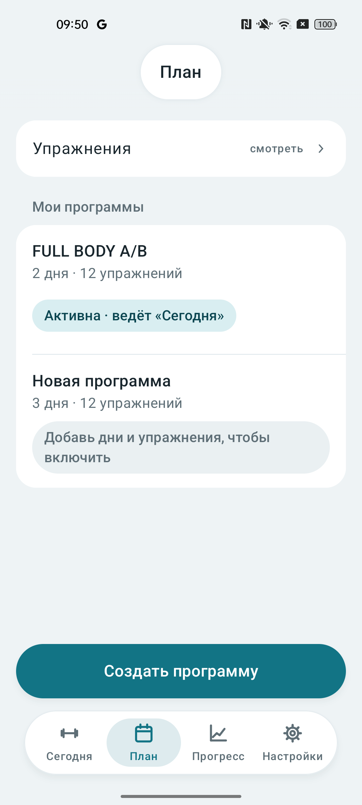
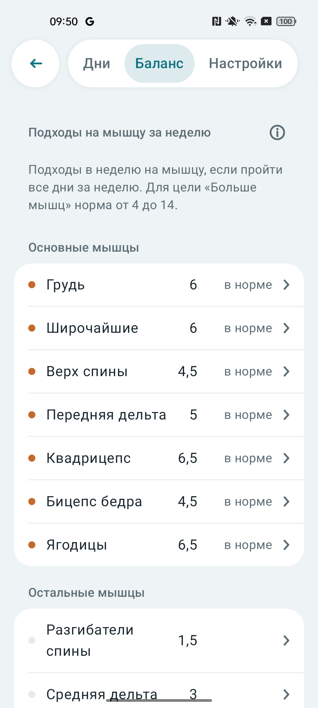
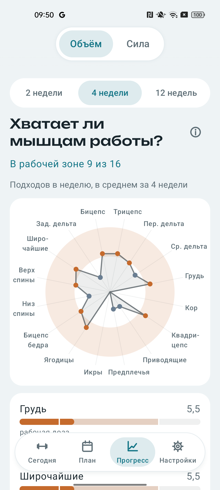

Как пользоваться Печорой
Разберём на примере: две тренировки в зале и одна дома. Настроим места, составим план, запишем тренировки и посмотрим, что получилось.
Это пример работы с приложением, а не готовая программа тренировок. Упражнения, веса и количество подходов подбирайте под свой опыт, оборудование и самочувствие. Скриншоты сделаны в приложении; цифры на них относятся к другому дневнику и служат только примером.
Добавляем зал и дом
Допустим, в зале у вас есть штанга, гантели и тренажёры, а дома — гантели и скамья. Создадим два места, чтобы при составлении плана было видно, какое оборудование доступно в каждый день.
- Откройте «Настройки» → «Места» → «Добавить место».
- Введите название, например «Зал». Место сохранится, как только появится название.
- Выберите подходящий готовый набор — например, «Средний зал». Прокрутите список ниже и отметьте то, что есть на самом деле. Если какого-то тренажёра нет, снимите отметку.
- Вернитесь к списку мест и таким же образом добавьте «Дом». Можно начать с набора «Дом», а затем поправить его.
- Если используете диски и грифы, укажите их в разделе свободных весов. Если занимаетесь с эспандерами, откройте «Мои эспандеры» и настройте набор от лёгкого к тяжёлому.
Место не привязывает вас к адресу. Это описание оборудования: оно пригодится при проверке плана и подборе замен.
Создаём программу на три дня
Теперь соберём программу: два разных дня в зале и один дома. Назовём их «Зал А», «Зал Б» и «Дом». Это дни программы, а не жёсткая привязка к понедельнику или среде: вы проходите их по порядку.

- Откройте вкладку «План» и нажмите «Создать программу».
- Выберите «Пустая программа», чтобы собрать её самостоятельно. Другой вариант — ответить на вопросы о цели, частоте и месте; приложение предложит план, который можно посмотреть и изменить.
- В редакторе откройте «Настройки», назовите программу, например «Зал и дом», и выберите цель, которая вам подходит. Цель влияет на ориентиры баланса и отдыха.
- Вернитесь в «Дни». Создайте три дня кнопкой «+ День», задайте им названия и выберите место: для первых двух — «Зал», для третьего — «Дом».
- В каждом дне добавьте упражнения из каталога. В домашний день выбирайте упражнения, для которых есть оборудование дома. Если приложение указывает, что оборудование недоступно, проверьте место или подберите замену.
- Откройте упражнение в плане и задайте цели: количество подходов, повторы или диапазон повторов, вес и запас повторов. Если рабочий вес пока неизвестен, его можно подобрать во время тренировки.
Что означают цели подходов
Например, запись 3 × 8–12 означает три подхода, в каждом из которых вы планируете выполнить от восьми до двенадцати повторов. Если указать запас 2, ориентир — закончить подход с ощущением, что вы могли бы сделать ещё примерно два повтора. Это оценка, а не измерение с точностью до повтора.
Для примера можно начать с нескольких знакомых движений на ноги, жим и тягу в каждый день, используя доступное оборудование. Не обязательно сразу заполнять весь план: добавьте упражнения и цели, которые понимаете, затем проверьте баланс.
Нужна ли прогрессия?
Её можно включить в настройках программы, но это необязательно. Линейная схема предлагает прибавить вес после выполнения цели. Двойная сначала предлагает увеличивать повторы в заданном диапазоне, а при достижении верхней границы — вес. Например, для 3 × 8–12 сначала можно постепенно дойти до 12 повторов во всех подходах. Приложение предлагает изменение; вы решаете, принять его или оставить прежний вес.
Проверяем баланс
В редакторе программы откройте вкладку «Баланс». Она отвечает на вопрос: что получат мышцы, если пройти все дни этого плана за неделю? В нашем примере — оба дня зала и домашний день.

В списке показаны мышцы, количество зачтённых подходов и оценка относительно ориентира. Главной мышце упражнения засчитывается целый подход, помогающей — половина. Поэтому число может быть дробным: например, 4,5. Нажмите на строку мышцы, чтобы разобраться, из чего складывается её нагрузка.
Что делать с результатом
- Если для важной вам мышцы показано мало, посмотрите, есть ли в плане подходящие упражнения. Можно добавить один-два подхода или упражнение в тот день, где есть время и оборудование.
- Если показано слишком много, посмотрите, какие упражнения дают этой мышце нагрузку. Возможно, стоит убрать часть подходов или распределить их по дням.
- Прокрутите до распределения по дням: там видно, не собралась ли большая часть работы на одну мышцу в одной тренировке. Нажатие на ячейку открывает соответствующий день.
- Вернитесь в «Баланс» после изменений: расчёт обновляется. Раздел «Что стоит поправить» подскажет дополнительные замечания, если они есть.
Не нужно подгонять каждую строку под идеальную отметку. Ориентир зависит от цели и не знает всего о вашем восстановлении. Для остальных мышц серая точка сама по себе не означает, что им обязательно нужны отдельные упражнения.
План и факт — разные вещи. Если за неделю вы успели только два дня из трёх, фактической работы будет меньше, чем показано в балансе. Посмотреть выполненное можно во вкладке «Прогресс».
Тренируемся и ведём дневник
Когда программа готова и выбрана активной, откройте «Сегодня». Приложение покажет очередной день. В нашем примере это может быть «Зал А».
- Нажмите «Начать по плану». Если хотите провести другую тренировку, можно выбрать «Без плана».
- Откройте первое упражнение. Перед рабочими подходами выполните нужную разминку; настройки разминочных подходов и таймера находятся в «Настройки» → «Тренировки».
- После подхода запишите то, что действительно сделали: вес, повторы и, если используете, запас повторов. Например, план был 3 × 8–12, а первый подход получился 10 повторов — запишите 10.
- Отдохните, выполните остальные подходы и запишите каждый. Приложение учитывает тип нагрузки: например, для гантелей поле может означать вес одной гантели, а для эспандера выбирается сам эспандер.
- Если упражнение недоступно, подберите замену. По названию упражнения можно открыть его страницу с историей и описанием техники; для некоторых упражнений доступно видео.
- Завершите тренировку. В следующий раз на «Сегодня» появится следующий день активной программы.
Записывайте фактические результаты, даже если они отличаются от плана. Именно они составят историю и попадут в расчёты прогресса.
Смотрим, что получилось
После нескольких недель откройте вкладку «Прогресс». Здесь есть два раздела: «Объём» и «Сила». Они отвечают на разные вопросы: сколько работы было выполнено и как менялись результаты упражнений.

Объём: удалось ли выполнить план?
Выберите, например, четыре недели. Экран показывает среднее число зачтённых подходов в неделю за это окно. Учитываются тяжёлые подходы с отмеченным запасом не больше четырёх повторов. Главная мышца получает целый подход, помогающая — половину.
Допустим, по плану у мышцы должно было быть шесть подходов в неделю, а по факту среднее оказалось ниже. Сначала проверьте, сколько тренировок вы провели: если домашний день часто пропускался, причина может быть в этом. Нажмите на мышцу, чтобы посмотреть объяснение и упражнения, из которых сложилась цифра. Если тренировки были, проверьте записи подходов и отметки запаса.
Если нагрузка регулярно получается заметно меньше запланированной, подумайте, реалистичен ли график. Если регулярно слишком большая и вы не успеваете восстанавливаться, посмотрите, что можно сократить. Полоса — ориентир для разговора с собой, не обязательная норма.
Сила: меняются ли результаты?
Переключитесь на «Сила» и выберите период. Здесь можно посмотреть изменение по упражнениям и открыть историю конкретного упражнения. Например, сравнить подходы жима в начале и конце окна: получилось ли сделать больше повторов с тем же весом или тот же объём с большим весом.
Оценка силы использует подходы с весом и отметкой запаса. Расчётный максимум — приблизительная оценка по этим данным, а не вес, который вы действительно подняли один раз. Для направления тренда нужно не менее трёх тренировок упражнения; если данных мало, продолжайте записывать подходы.
Не делайте вывод по одной удачной или неудачной тренировке. Посмотрите историю, регулярность и самочувствие. Если изменили упражнение или способ его выполнения, прямое сравнение может быть менее полезным.
Сохраняем копию
Дневник хранится на устройстве. В «Настройки» → «Данные» можно экспортировать его в JSON, импортировать из файла, настроить копирование в папку на устройстве или подключить Google Диск. Инструкции по восстановлению и отключению Диска — на странице поддержки.